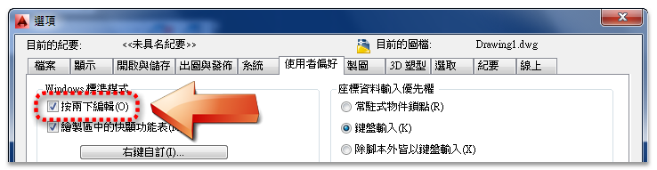
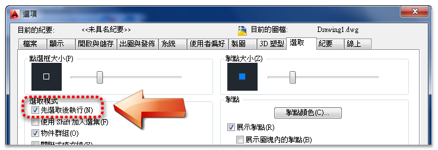

大家使用AutoCAD那麼久了，不知道您是否有常常在想，有沒有辦法節省繪圖指令步驟!
相信各位朋友都是心有餘而力不足...因為不是每一個人都會寫 巨集、程式。
從AutoCAD 2006版本開始，將mns功能表檔案改為CUI自訂檔，這樣修改自訂部份對於新手很方便，不需要有程式語法基礎，現在只要你有心人人都可以當食神~
這裡和各位分享一個簡單的方式 CUI自訂，可以嘗試自訂快速鍵及按兩下動作~
注意：
「按兩下編輯」DBLCLKEDIT 系統變數 必須設定1(開啟)。

「先選取後執行」PICKFIRST 系統變數 必須設定1(開啟)。

註：初學者測試時要仔細按照步驟，建議不熟的話先不要操作，有問題可以直接提出來討論。
一、什麼是快速鍵
簡單說我們知道 性質選項板(properties指令) 常常需要點選功能區(或工具列)來開啟，而系統預設的快速鍵為 CTRL+1 。您可以透過按住 CTRL鍵 + 再按數字鍵1 即可開關 性質選項板。
快速鍵通常也用在以下地方:
Ctrl+3 >> 切換「工具選項板」視窗
Ctrl+4 >> 切換「圖紙集管理員」
Ctrl+S >> 儲存目前圖面
Ctrl+C >> 將物件複製到 Windows 剪貼簿
快速鍵概述:快速鍵是啟動指令的按鍵組合。例如，您可以按 Ctrl+O 開啟檔案，按 Ctrl+S 儲存檔案，它們與在快速存取工具列或「檔案」功能表上按一下「開啟」和「儲存」相同。
建立快速鍵官網說明與操作步驟(點我)
二、什麼是按兩下動作
這裡先請問大家如何編輯文字，您是按工具列、還是打DDEDIT指令，相信一定有人是使用快按滑鼠左鍵二次，這所謂的按兩下動作，程式會幫您判斷物件性質，然後執行相關的編輯指令。
按兩下動作通常也用在以下地方:
屬性文字 >> 增強型屬性編輯器(eattedit指令)
圖塊 >> 編輯圖塊定義(bedit指令)
外部參考 >> 參考編輯(refedit指令)
按兩下動作概述:按兩下動作所執行的指令可顯示「性質」選項板或特定的編輯器，它們功能更加強大、使用更加方便且更常用於要在圖面中按兩下的物件類型。下表展示了 CUI 編輯器中「屬性圖塊」按兩下動作的定義。
建立按兩下動作官網說明與操作步驟 (點我)
現在我們來試試使用以下二個任務
1.建立快速鍵：CTRL+5 >> 開啟AutoCAD顧問首頁
名稱：AutoCAD顧問
巨集：^C^C_.browser https://www.autocad-tw.com
影片網址： https://youtu.be/76wRb3vnQRc
註:需使用2006以上版本才可自訂。
2.建立按兩下動作：標註 >> 標註文字編輯
名稱：標註
物件名稱：DIMENSION
影片網址： https://youtu.be/tpP_RzntEM4
註:需使用2007以上版本才可自訂。
PS:在這不建議更改預設值喔!